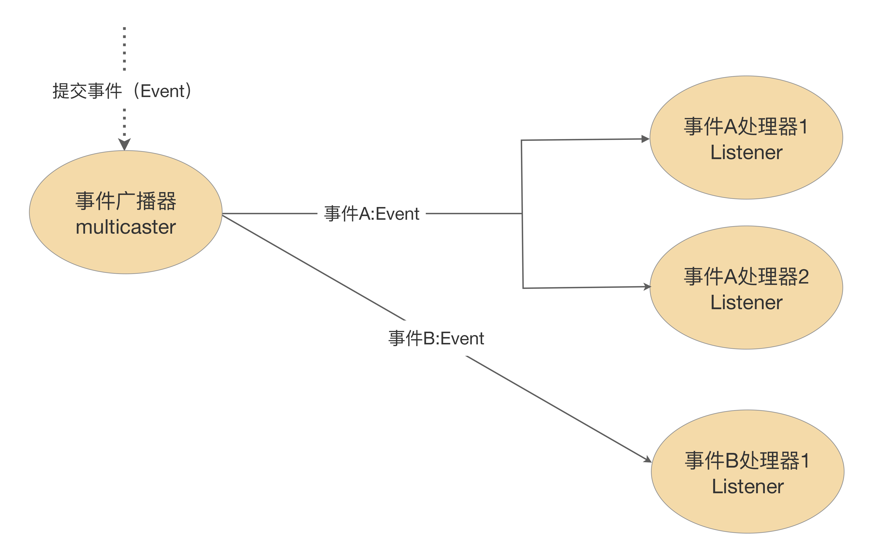
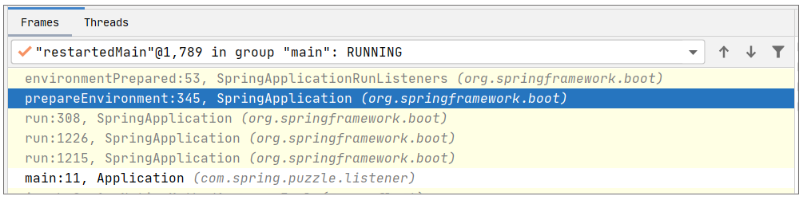
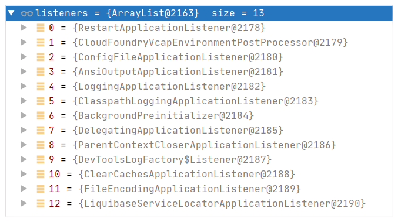

- 00 导读 5分钟轻松了解Spring基础知识.md.html
- 00 开篇词 贴心“保姆”Spring罢工了怎么办？.md.html
- 01 Spring Bean 定义常见错误.md.html
- 02 Spring Bean 依赖注入常见错误（上）.md.html
- 03 Spring Bean 依赖注入常见错误（下）.md.html
- 04 Spring Bean 生命周期常见错误.md.html
- 05 Spring AOP 常见错误（上）.md.html
- 06 Spring AOP 常见错误（下）.md.html
- 07 Spring事件常见错误.md.html
- 08 答疑现场：Spring Core 篇思考题合集.md.html
- 09 Spring Web URL 解析常见错误.md.html
- 10 Spring Web Header 解析常见错误.md.html
- 11 Spring Web Body 转化常见错误.md.html
- 12 Spring Web 参数验证常见错误.md.html
- 13 Spring Web 过滤器使用常见错误（上）.md.html
- 14 Spring Web 过滤器使用常见错误（下）.md.html
- 15 Spring Security 常见错误.md.html
- 16 Spring Exception 常见错误.md.html
- 17 答疑现场：Spring Web 篇思考题合集.md.html
- 18 Spring Data 常见错误.md.html
- 19 Spring 事务常见错误（上）.md.html
- 20 Spring 事务常见错误（下）.md.html
- 21 Spring Rest Template 常见错误.md.html
- 22 Spring Test 常见错误.md.html
- 23 答疑现场：Spring 补充篇思考题合集.md.html
- 导读 5分钟轻松了解一个HTTP请求的处理过程.md.html
- 知识回顾 系统梳理Spring编程错误根源.md.html
- 结束语 问题总比解决办法多.md.html
- 捐赠
07 Spring事件常见错误
你好，我是傅健，这节课我们聊聊Spring事件上的常见错误。
前面的几讲中，我们介绍了Spring依赖注入、AOP等核心功能点上的常见错误。而作为Spring 的关键功能支撑，Spring事件是一个相对独立的点。或许你从没有在自己的项目中使用过Spring事件，但是你一定见过它的相关日志。而且在未来的编程实践中，你会发现，一旦你用上了Spring事件，往往完成的都是一些有趣的、强大的功能，例如动态配置。那么接下来我就来讲讲Spring事件上都有哪些常见的错误。
案例1：试图处理并不会抛出的事件
Spring事件的设计比较简单。说白了，就是监听器设计模式在Spring中的一种实现，参考下图：

从图中我们可以看出，Spring事件包含以下三大组件。
- 事件（Event）：用来区分和定义不同的事件，在Spring中，常见的如ApplicationEvent和AutoConfigurationImportEvent，它们都继承于java.util.EventObject。
- 事件广播器（Multicaster）：负责发布上述定义的事件。例如，负责发布ApplicationEvent 的ApplicationEventMulticaster就是Spring中一种常见的广播器。
- 事件监听器（Listener）：负责监听和处理广播器发出的事件，例如ApplicationListener就是用来处理ApplicationEventMulticaster发布的ApplicationEvent，它继承于JDK的 EventListener，我们可以看下它的定义来验证这个结论：
public interface ApplicationListener
extends EventListener {- void onApplicationEvent(E event);- }
当然，虽然在上述组件中，任何一个都是缺一不可的，但是功能模块命名不见得完全贴合上述提及的关键字，例如发布AutoConfigurationImportEvent的广播器就不含有Multicaster字样。它的发布是由AutoConfigurationImportSelector来完成的。
对这些基本概念和实现有了一定的了解后，我们就可以开始解析那些常见的错误。闲话少说，我们先来看下面这段基于Spring Boot技术栈的代码：
@Slf4j
@Component
public class MyContextStartedEventListener implements ApplicationListener<ContextStartedEvent> {
public void onApplicationEvent(final ContextStartedEvent event) {
log.info("{} received: {}", this.toString(), event);
}
}
很明显，这段代码定义了一个监听器MyContextStartedEventListener，试图拦截ContextStartedEvent。因为在很多Spring初级开发者眼中，Spring运转的核心就是一个Context的维护，那么启动Spring自然会启动Context，于是他们是很期待出现类似下面的日志的：
2021-03-07 07:08:21.197 INFO 2624 — [nio-8080-exec-1] c.s.p.l.e.MyContextStartedEventListener : com.spring.puzzle.class7.example1.MyContextStartedEventListener@d33d5a received: org.springframework.context.event.ContextStartedEvent[source=org.springframework.boot.web.servlet.context.AnnotationConfigServletWebServerApplicationContext@19b56c0, started on Sun Mar 07 07:07:57 CST 2021]
但是当我们启动Spring Boot后，会发现并不会拦截到这个事件，如何理解这个错误呢？
案例解析
在Spring事件运用上，这是一个常见的错误，就是不假思索地认为一个框架只要定义了一个事件，那么一定会抛出来。例如，在本案例中，ContextStartedEvent就是Spring内置定义的事件，而Spring Boot本身会创建和运维Context，表面看起来这个事件的抛出是必然的，但是这个事件一定会在Spring Boot启动时抛出来么？
答案明显是否定的，我们首先看下要抛出这个事件需要调用的方法是什么？在Spring Boot中，这个事件的抛出只发生在一处，即位于方法AbstractApplicationContext#start中。
@Override
public void start() {
getLifecycleProcessor().start();
publishEvent(new ContextStartedEvent(this));
}
也就是说，只有上述方法被调用，才会抛出ContextStartedEvent，但是这个方法在Spring Boot启动时会被调用么？我们可以查看Spring启动方法中围绕Context的关键方法调用，代码如下：
public ConfigurableApplicationContext run(String... args) {
//省略非关键代码
context = createApplicationContext();
//省略非关键代码
prepareContext(context, environment, listeners, applicationArguments, printedBanner);
refreshContext(context);
//省略非关键代码
return context;
}
我们发现围绕Context、Spring Boot的启动只做了两个关键工作：创建Context和Refresh Context。其中Refresh的关键代码如下：
protected void refresh(ApplicationContext applicationContext) {
Assert.isInstanceOf(AbstractApplicationContext.class, applicationContext);
((AbstractApplicationContext) applicationContext).refresh();
}
很明显，Spring启动最终调用的是AbstractApplicationContext#refresh，并不是 AbstractApplicationContext#start。在这样的残酷现实下，ContextStartedEvent自然不会被抛出，不抛出，自然也不可能被捕获。所以这样的错误也就自然发生了。
问题修正
针对这个案例，有了源码的剖析，我们可以很快找到问题发生的原因，但是修正这个问题还要去追溯我们到底想要的是什么？我们可以分两种情况来考虑。
1. 假设我们是误读了ContextStartedEvent。
针对这种情况，往往是因为我们确实想在Spring Boot启动时拦截一个启动事件，但是我们粗略扫视相关事件后，误以为ContextStartedEvent就是我们想要的。针对这种情况，我们只需要把监听事件的类型修改成真正发生的事件即可，例如在本案例中，我们可以修正如下：
@Component
public class MyContextRefreshedEventListener implements ApplicationListener<ContextRefreshedEvent> {
public void onApplicationEvent(final ContextRefreshedEvent event) {
log.info("{} received: {}", this.toString(), event);
}
}
我们监听ContextRefreshedEvent而非ContextStartedEvent。ContextRefreshedEvent的抛出可以参考方法AbstractApplicationContext#finishRefresh，它本身正好是Refresh操作中的一步。
protected void finishRefresh() {
//省略非关键代码
initLifecycleProcessor();
// Propagate refresh to lifecycle processor first.
getLifecycleProcessor().onRefresh();
// Publish the final event.
publishEvent(new ContextRefreshedEvent(this));
//省略非关键代码
}
2. 假设我们就是想要处理ContextStartedEvent。
这种情况下，我们真的需要去调用AbstractApplicationContext#start方法。例如，我们可以使用下面的代码来让这个事件抛出：
@RestController
public class HelloWorldController {
@Autowired
private AbstractApplicationContext applicationContext;
@RequestMapping(path = "publishEvent", method = RequestMethod.GET)
public String notifyEvent(){
applicationContext.start();
return "ok";
};
}
我们随便找一处来Autowired一个AbstractApplicationContext，然后直接调用其start()就能让事件抛出来。
很明显，这种抛出并不难，但是作为题外话，我们可以思考下为什么要去调用start()呢？start()本身在Spring Boot中有何作用？
如果我们去翻阅这个方法，我们会发现start()是org.springframework.context.Lifecycle定义的方法，而它在Spring Boot的默认实现中是去执行所有Lifecycle Bean的启动方法，这点可以参考DefaultLifecycleProcessor#startBeans方法来验证：
private void startBeans(boolean autoStartupOnly) {
Map<String, Lifecycle> lifecycleBeans = getLifecycleBeans();
Map<Integer, LifecycleGroup> phases = new HashMap<>();
lifecycleBeans.forEach((beanName, bean) -> {
if (!autoStartupOnly || (bean instanceof SmartLifecycle && ((SmartLifecycle) bean).isAutoStartup())) {
int phase = getPhase(bean);
LifecycleGroup group = phases.get(phase);
if (group == null) {
group = new LifecycleGroup(phase, this.timeoutPerShutdownPhase, lifecycleBeans, autoStartupOnly);
phases.put(phase, group);
}
group.add(beanName, bean);
}
});
if (!phases.isEmpty()) {
List<Integer> keys = new ArrayList<>(phases.keySet());
Collections.sort(keys);
for (Integer key : keys) {
phases.get(key).start();
}
}
}
说起来比较抽象，我们可以去写一个Lifecycle Bean，代码如下：
@Component
@Slf4j
public class MyLifeCycle implements Lifecycle {
private volatile boolean running = false;
@Override
public void start() {
log.info("lifecycle start");
running = true;
}
@Override
public void stop() {
log.info("lifecycle stop");
running = false;
}
@Override
public boolean isRunning() {
return running;
}
}
当我们再次运行Spring Boot时，只要执行了AbstractApplicationContext的start()，就会输出上述代码定义的行为：输出LifeCycle start日志。
通过这个Lifecycle Bean的使用，AbstractApplicationContext的start要做的事，我们就清楚多了。它和Refresh()不同，Refresh()是初始化和加载所有需要管理的Bean，而start只有在有Lifecycle Bean时才有被调用的价值。那么我们自定义Lifecycle Bean一般是用来做什么呢？例如，可以用它来实现运行中的启停。这里不再拓展，你可以自己做更深入的探索。
通过这个案例，我们搞定了第一类错误。而从这个错误中，我们也得出了一个启示：当一个事件拦截不了时，我们第一个要查的是拦截的事件类型对不对，执行的代码能不能抛出它。把握好这点，也就事半功倍了。
案例2：监听事件的体系不对
通过案例1的学习，我们可以保证事件的抛出，但是抛出的事件就一定能被我们监听到么？我们再来看这样一个案例，首先上代码：
@Slf4j
@Component
public class MyApplicationEnvironmentPreparedEventListener implements ApplicationListener<ApplicationEnvironmentPreparedEvent > {
public void onApplicationEvent(final ApplicationEnvironmentPreparedEvent event) {
log.info("{} received: {}", this.toString(), event);
}
}
这里我们试图处理ApplicationEnvironmentPreparedEvent。期待出现拦截事件的日志如下：
2021-03-07 09:12:08.886 INFO 27064 — [ restartedMain] licationEnvironmentPreparedEventListener : com.spring.puzzle.class7.example2.MyApplicationEnvironmentPreparedEventListener@2b093d received: org.springframework.boot.context.event.ApplicationEnvironmentPreparedEvent[source=org.springframework.boot.SpringApplication@122b9e6]
有了案例1的经验，首先我们就可以查看下这个事件的抛出会不会存在问题。这个事件在Spring中是由EventPublishingRunListener#environmentPrepared方法抛出，代码如下：
@Override
public void environmentPrepared(ConfigurableEnvironment environment) {
this.initialMulticaster
.multicastEvent(new ApplicationEnvironmentPreparedEvent(this.application, this.args, environment));
}
现在我们调试下代码，你会发现这个方法在Spring启动时一定经由SpringApplication#prepareEnvironment方法调用，调试截图如下：

表面上看，既然代码会被调用，事件就会抛出，那么我们在最开始定义的监听器就能处理，但是我们真正去运行程序时会发现，效果和案例1是一样的，都是监听器的处理并不执行，即拦截不了。这又是为何？
案例解析
实际上，这是在Spring事件处理上非常容易犯的一个错误，即监听的体系不一致。通俗点说，就是“驴头不对马嘴”。我们首先来看下关于ApplicationEnvironmentPreparedEvent的处理，它相关的两大组件是什么？
- 广播器：这个事件的广播器是EventPublishingRunListener的initialMulticaster，代码参考如下：
public class EventPublishingRunListener implements SpringApplicationRunListener, Ordered {
//省略非关键代码
private final SimpleApplicationEventMulticaster initialMulticaster;
public EventPublishingRunListener(SpringApplication application, String[] args) {
//省略非关键代码
this.initialMulticaster = new SimpleApplicationEventMulticaster();
for (ApplicationListener<?> listener : application.getListeners()) {
this.initialMulticaster.addApplicationListener(listener);
}
}
}
- 监听器：这个事件的监听器同样位于EventPublishingRunListener中，获取方式参考关键代码行：
this.initialMulticaster.addApplicationListener(listener);
如果继续查看代码，我们会发现这个事件的监听器就存储在SpringApplication#Listeners中，调试下就可以找出所有的监听器，截图如下：

从中我们可以发现并不存在我们定义的MyApplicationEnvironmentPreparedEventListener，这是为何？
还是查看代码，当Spring Boot被构建时，会使用下面的方法去寻找上述监听器：
setListeners((Collection) getSpringFactoriesInstances(ApplicationListener.class));
而上述代码最终寻找Listeners的候选者，参考代码 SpringFactoriesLoader#loadSpringFactories中的关键行：
//下面的FACTORIES_RESOURCE_LOCATION定义为 “META-INF/spring.factories”- classLoader.getResources(FACTORIES_RESOURCE_LOCATION) :
我们可以寻找下这样的文件（spring.factories），确实可以发现类似的定义：
org.springframework.context.ApplicationListener=\
org.springframework.boot.ClearCachesApplicationListener,\
org.springframework.boot.builder.ParentContextCloserApplicationListener,\
org.springframework.boot.cloud.CloudFoundryVcapEnvironmentPostProcessor,\
//省略其他监听器
说到这里，相信你已经意识到本案例的问题所在。我们定义的监听器并没有被放置在META-INF/spring.factories中，实际上，我们的监听器监听的体系是另外一套，其关键组件如下：
- 广播器：即AbstractApplicationContext#applicationEventMulticaster；
- 监听器：由上述提及的META-INF/spring.factories中加载的监听器以及扫描到的 ApplicationListener类型的Bean共同组成。
这样比较后，我们可以得出一个结论：我们定义的监听器并不能监听到initialMulticaster广播出的ApplicationEnvironmentPreparedEvent。
问题修正
现在就到了解决问题的时候了，我们可以把自定义监听器注册到initialMulticaster广播体系中，这里提供两种方法修正问题。
- 在构建Spring Boot时，添加MyApplicationEnvironmentPreparedEventListener：
@SpringBootApplication
public class Application {
public static void main(String[] args) {
MyApplicationEnvironmentPreparedEventListener myApplicationEnvironmentPreparedEventListener = new MyApplicationEnvironmentPreparedEventListener();
SpringApplication springApplication = new SpringApplicationBuilder(Application.class).listeners(myApplicationEnvironmentPreparedEventListener).build();
springApplication.run(args);
}
}
- 使用META-INF/spring.factories，即在/src/main/resources下面新建目录META-INF，然后新建一个对应的spring.factories文件：
org.springframework.context.ApplicationListener=\
com.spring.puzzle.listener.example2.MyApplicationEnvironmentPreparedEventListener
通过上述两种修改方式，即可完成事件的监听，很明显第二种方式要优于第一种，至少完全用原生的方式去解决，而不是手工实例化一个MyApplicationEnvironmentPreparedEventListener。这点还是挺重要的。
反思这个案例的错误，结论就是对于事件一定要注意“驴头”（监听器）对上“马嘴”（广播）。
案例3：部分事件监听器失效
通过前面案例的解析，我们可以确保事件在合适的时机被合适的监听器所捕获。但是理想总是与现实有差距，有些时候，我们可能还会发现部分事件监听器一直失效或偶尔失效。这里我们可以写一段代码来模拟偶尔失效的场景，首先我们完成一个自定义事件和两个监听器，代码如下：
public class MyEvent extends ApplicationEvent {
public MyEvent(Object source) {
super(source);
}
}
@Component
@Order(1)
public class MyFirstEventListener implements ApplicationListener<MyEvent> {
Random random = new Random();
@Override
public void onApplicationEvent(MyEvent event) {
log.info("{} received: {}", this.toString(), event);
//模拟部分失效
if(random.nextInt(10) % 2 == 1)
throw new RuntimeException("exception happen on first listener");
}
}
@Component
@Order(2)
public class MySecondEventListener implements ApplicationListener<MyEvent> {
@Override
public void onApplicationEvent(MyEvent event) {
log.info("{} received: {}", this.toString(), event);
}
}
这里监听器MyFirstEventListener的优先级稍高，且执行过程中会有50%的概率抛出异常。然后我们再写一个Controller来触发事件的发送：
@RestController
@Slf4j
public class HelloWorldController {
@Autowired
private AbstractApplicationContext applicationContext;
@RequestMapping(path = "publishEvent", method = RequestMethod.GET)
public String notifyEvent(){
log.info("start to publish event");
applicationContext.publishEvent(new MyEvent(UUID.randomUUID()));
return "ok";
};
}
完成这些代码后，我们就可以使用http://localhost:8080/publishEvent 来测试监听器的接收和执行了。观察测试结果，我们会发现监听器MySecondEventListener有一半的概率并没有接收到任何事件。可以说，我们使用了最简化的代码模拟出了部分事件监听器偶尔失效的情况。当然在实际项目中，抛出异常这个根本原因肯定不会如此明显，但还是可以借机举一反三的。那么如何理解这个问题呢？
案例解析
这个案例非常简易，如果你稍微有些开发经验的话，大概也能推断出原因：处理器的执行是顺序执行的，在执行过程中，如果一个监听器执行抛出了异常，则后续监听器就得不到被执行的机会了。这里我们可以通过Spring源码看下事件是如何被执行的？
具体而言，当广播一个事件，执行的方法参考 SimpleApplicationEventMulticaster#multicastEvent(ApplicationEvent)：
@Override
public void multicastEvent(final ApplicationEvent event, @Nullable ResolvableType eventType) {
ResolvableType type = (eventType != null ? eventType : resolveDefaultEventType(event));
Executor executor = getTaskExecutor();
for (ApplicationListener<?> listener : getApplicationListeners(event, type)) {
if (executor != null) {
executor.execute(() -> invokeListener(listener, event));
}
else {
invokeListener(listener, event);
}
}
}
上述方法通过Event类型等信息调用getApplicationListeners获取了具有执行资格的所有监听器（在本案例中，即为MyFirstEventListener和MySecondEventListener），然后按顺序去执行。最终每个监听器的执行是通过invokeListener()来触发的，调用的是接口方法 ApplicationListener#onApplicationEvent。执行逻辑可参考如下代码：
protected void invokeListener(ApplicationListener<?> listener, ApplicationEvent event) {
ErrorHandler errorHandler = getErrorHandler();
if (errorHandler != null) {
try {
doInvokeListener(listener, event);
}
catch (Throwable err) {
errorHandler.handleError(err);
}
}
else {
doInvokeListener(listener, event);
}
}
private void doInvokeListener(ApplicationListener listener, ApplicationEvent event) {
try {
listener.onApplicationEvent(event);
}
catch (ClassCastException ex) {
//省略非关键代码
}
else {
throw ex;
}
}
}
这里我们并没有去设置什么org.springframework.util.ErrorHandler，也没有绑定什么Executor 来执行任务，所以针对本案例的情况，我们可以看出：最终事件的执行是由同一个线程按顺序来完成的，任何一个报错，都会导致后续的监听器执行不了。
问题修正
怎么解决呢？好办，我提供两种方案给你。
1. 确保监听器的执行不会抛出异常。
既然我们使用多个监听器，我们肯定是希望它们都能执行的，所以我们一定要保证每个监听器的执行不会被其他监听器影响。基于这个思路，我们修改案例代码如下：
@Component
@Order(1)
public class MyFirstEventListener implements ApplicationListener<MyEvent> {
@Override
public void onApplicationEvent(MyEvent event) {
try {
// 省略事件处理相关代码
}catch(Throwable throwable){
//write error/metric to alert
}
}
}
2. 使用org.springframework.util.ErrorHandler。
通过上面的案例解析，我们发现，假设我们设置了一个ErrorHandler，那么就可以用这个ErrorHandler去处理掉异常，从而保证后续事件监听器处理不受影响。我们可以使用下面的代码来修正问题：
SimpleApplicationEventMulticaster simpleApplicationEventMulticaster = applicationContext.getBean(APPLICATION_EVENT_MULTICASTER_BEAN_NAME, SimpleApplicationEventMulticaster.class);
simpleApplicationEventMulticaster.setErrorHandler(TaskUtils.LOG_AND_SUPPRESS_ERROR_HANDLER);
其中LOG_AND_SUPPRESS_ERROR_HANDLER的实现如下：
public static final ErrorHandler LOG_AND_SUPPRESS_ERROR_HANDLER = new LoggingErrorHandler();
private static class LoggingErrorHandler implements ErrorHandler {
private final Log logger = LogFactory.getLog(LoggingErrorHandler.class);
@Override
public void handleError(Throwable t) {
logger.error("Unexpected error occurred in scheduled task", t);
}
}
对比下方案1，使用ErrorHandler有一个很大的优势，就是我们不需要在某个监听器中都重复类似下面的代码了：
try {
//省略事件处理过程
}catch(Throwable throwable){
//write error/metric to alert
}
这么看的话，其实Spring的设计还是很全面的，它考虑了各种各样的情况。但是Spring使用者往往都不会去了解其内部实现，这样就会遇到各种各样的问题。相反，如果你对其实现有所了解的话，也对常见错误有一个感知，则大概率是可以快速避坑的，项目也可以运行得更加平稳顺畅。
重点回顾
今天我们粗略地了解了Spring事件处理的基本流程。其实，抛开Spring框架，我们去设计一个通用的事件处理框架，常常也会犯这三种错误：
- 误读事件本身含义；
- 监听错了事件的传播系统；
- 事件处理之间互相影响，导致部分事件处理无法完成。
这三种错误正好对应了我们这节课讲解的三个案例。
此外，在Spring事件处理过程中，我们也学习到了监听器加载的特殊方式，即使用SPI的方式直接从配置文件META-INF/spring.factories中加载。这种方式或者说思想非常值得你去学习，因为它在许多Java应用框架中都有所使用，例如Dubbo，就是使用增强版的SPI来配置编解码器的。
思考题
在案例3中，我们提到默认的事件执行是在同一个线程中执行的，即事件发布者使用的线程。参考如下日志佐证这个结论：
2021-03-09 09:10:33.052 INFO 18104 — [nio-8080-exec-1] c.s.p.listener.HelloWorldController : start to publish event- 2021-03-09 09:10:33.055 INFO 18104 — [nio-8080-exec-1] c.s.p.l.example3.MyFirstEventListener : com.spring.puzzle.class7.example3.MyFirstEventListener@18faf0 received: com.spring.puzzle.class7.example3.MyEvent[source=df42b08f-8ee2-44df-a957-d8464ff50c88]
通过日志可以看出，事件的发布和执行使用的都是nio-8080-exec-1线程，但是在事件比较多时，我们往往希望事件执行得更快些，或者希望事件的执行可以异步化不影响主线程。此时应该怎么做呢？
期待在留言区看到你的回复，我们下节课见！
© 2019 - 2023 Liangliang Lee. Powered by gin and hexo-theme-book.